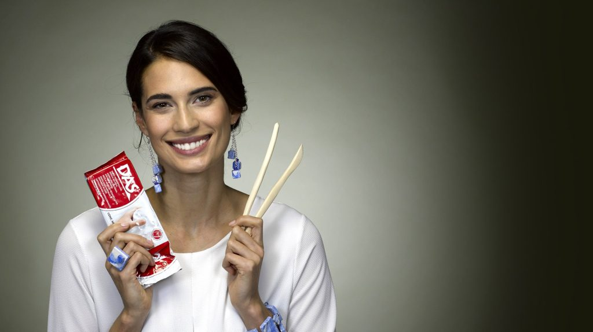

Modelling a legend. It is an invention that sprang from the creative flair of the poet and writer Dario Sala, from whom it takes its name. DAS is the most well-known and popular modelling paste for professionals, enthusiasts and children. With a mineral base, it dries in the air and produces solid and durable objects. It is particularly suitable for application on wood, cardboard and terracotta.
 ← Back to Brands